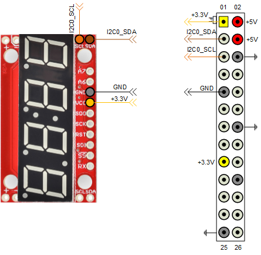

Build a Digital Voltmeter
This example shows you how to build a digital voltmeter using MATLAB® Support Package for Raspberry Pi® Hardware.
Contents
Introduction
In this example you combine the MCP3008 ADC with a 4-digit 7-segment display module to build a digital voltmeter. You connect the MCP3008 ADC to the Raspberry Pi hardware using SPI peripheral. You connect the 4-digit 7-segment display to the Raspberry Pi hardware using the I2C peripheral. A potentiometer connected to one of the analog inputs of the MCP3008 ADC provides a variable input voltage. You measure this voltage and display it on the segmented display.
You can replace the potentiometer with an analog temperature sensor or a photo-resistor to build a digital thermometer or a digital light sensor.
Prerequisites
It is helpful to complete the following examples
- Analog Input Using SPI example.
Required Hardware
To run this example you need the following hardware:
- Raspberry Pi hardware
- A power supply with at least 1A output
- Breadboard and jumper cables
- MCP3008 ADC
- 10 kOhm potentiometer
- A 4-digit, 7-segment display with I2C interface from SparkFun
Connect MCP3008
Connect MCP3008 to the Raspberry Pi hardware as seen in the following circuit diagram. To simulate a variable voltage applied to CH0, use a 10 kOhm potentiometer connected to CH0.

The potentiometer (POT), in this example, is a three-terminal device with terminals 1 and 3 comprising the end points of a resistor embedded in the POT. The second terminal is connected to a variable wiper. As the wiper moves, the resistance values across terminals 1 and 2 and terminals 2 and 3 change. In this circuit, POT acts as a variable voltage divider. As you move the knob of the potentiometer, the voltage seen at terminal 2 changes between 3.3 Volts and 0 volts.
Connect the Display
To connect the display to Raspberry Pi hardware, you need to do some light soldering. Since you use the I2C interface of the display in this example, solder jumper wires to the SDA, SCL, GND and VCC pins of the display. You can also choose to solder some straight male headers to be able to mount the display on a breadboard for prototyping. Before going any further, follow manufacturer's hardware assembly guide.
Connect the display to the Raspberry Pi hardware following the circuit diagram below.

View available SPI channels
Create a raspi object and inspect the AvailableSPIChannels property of the raspi object.
clear rpi
rpi = raspi();
rpi.AvailableSPIChannels
If the SPI peripheral is not enabled, you will see an empty cell array. To enable the SPI peripheral use the raspi-config utility that comes with the Raspbian Linux image. AvailableSPIChannels property of the rpi object should yield 'CE0' and 'CE1' SPI channels listed as available.
Scan I2C bus
Once the display is connected to the Raspberry Pi hardware, test the presence of the display on the I2C bus.
for i = 1:length(rpi.AvailableI2CBuses) scanI2CBus(rpi, rpi.AvailableI2CBuses{i}) end
The scanI2CBus() method scans the given I2C bus and returns a cell array of device addresses on the bus. If you connected the display to Raspberry Pi hardware correctly, the snippet of MATLAB code above should return a device address of '0x71' for one of the I2C buses available on the Raspberry Pi hardware. '0x71' is the factory default address of the display.
Read voltage
Create an MCP3008 object to read the voltage value at Channel 0 of the ADC.
clear mcp3008 mcp3008 = raspi.internal.mcp3008(rpi, 'CE0'); for i = 1:20 voltage = readVoltage(mcp3008, 0); fprintf('Voltage = %0.2f\n', voltage); pause(0.2); end
Try playing with the POT knob while executing the loop above. You should observe that the voltage value printed on the MATLAB prompt change.
Test the Segmented Display
Create a segmented display object connected to the appropriate I2C bus on the Raspberry Pi hardware.
clear sd sd = raspi.internal.segmentdisplay(rpi, <I2C bus>, <I2C address>) clr(sd); % Clear screen print(sd, '112'); print(sd, 'dead'); print(sd, 'beef');
Substitute the correct I2C bus and I2C address for your segmented display.
Display Voltage Measurements
Read the voltage at Channel 0 of the MCP3008 ADC and display it on the segmented display every 0.1 seconds.
delay = 0.1; adcChannel = 0; clr(sd); for i = 1:N voltage = readVoltage(mcp3008,adcChannel); print(sd,sprintf('%0.0f', voltage*100)); pause(delay); end
Summary
This example showed how to use a MCP3008 ADC and a segmented display connected to Raspberry Pi hardware to build a digital voltmeter application.